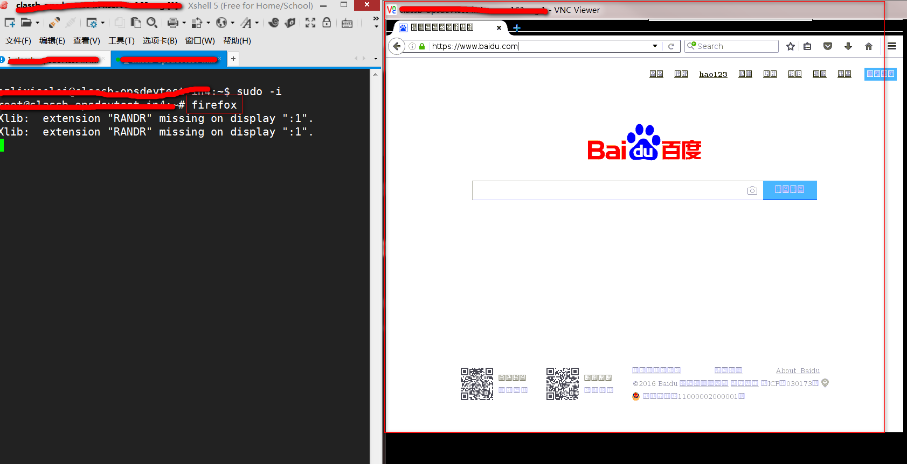
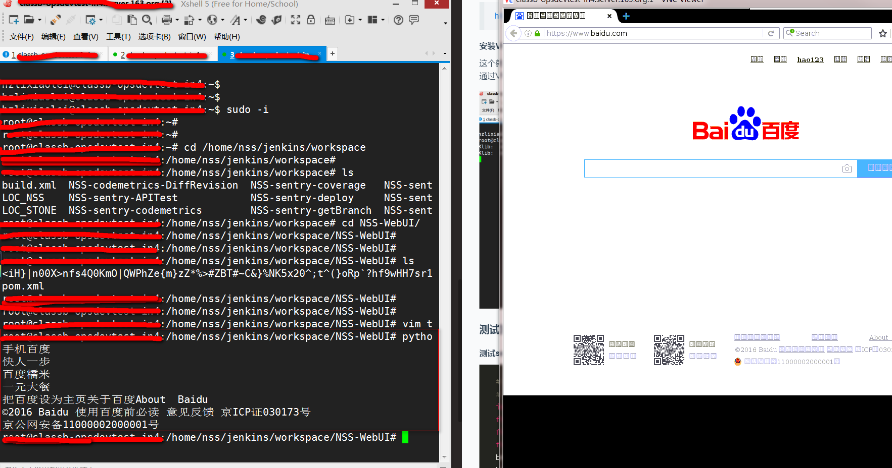

环境搭建
Xvfb介绍
Xvfb is an X server that can run on machines with no display hardware and no physical input devices. It emulates a dumb framebuffer using virtual memory.
https://www.x.org/archive/X11R7.6/doc/man/man1/Xvfb.1.xhtml
简单来说，就是模拟了window的图形化功能，所以如果想实例化FireFoxWebDriver，仍然需要安装一个firefox。
Xvfb安装
|
|
Xvfb启动
|
|
命令的意思是：作为Server Number1 监听。有两个屏幕配置，默认是Screen0，width, height, and depth = 1280x1024x8，第二块屏幕配置为width, height, and depth = 1600x1200x16。
这里如果用自动启动脚本是更佳的：
|
|
Firefox
安装
|
|
启动firefox
|
|
到这里是不是有点懵比，界面呢？？ VNC server来解决这个问题
X11VNC server
介绍
x11vnc allows one to view remotely and interact with real X displays (i.e. a display corresponding to a physical monitor, keyboard, and mouse) with any VNC viewer.
http://www.karlrunge.com/x11vnc/
安装运行
|
|
参数解释，Display 1，就是上面Xvfb配置的1号屏幕。
-xkb，看到官网解释，是优化键盘输入
安装VNC Viewer
这个就不多说了，http://www.realvnc.com/，来这里找到下载包安装即可。
通过VNC viewer链接 云主机，效果如下：

测试执行效果
测试selenium
|
|
执行效果如下：

成功
问题
- 还未大范围执行，不知道稳定性如何。也不知道和window/Mac OX真实场景相比如何
- openid访问内网一般都需要将军令，这个需要解决。
- Chrome还未实验，不知能否走下去。
展望
- 如果使用Docker，安装Ubuntu的镜像，应该可以快速解决上述环境搭建问题。